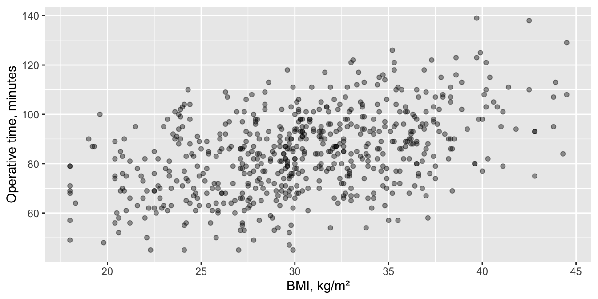
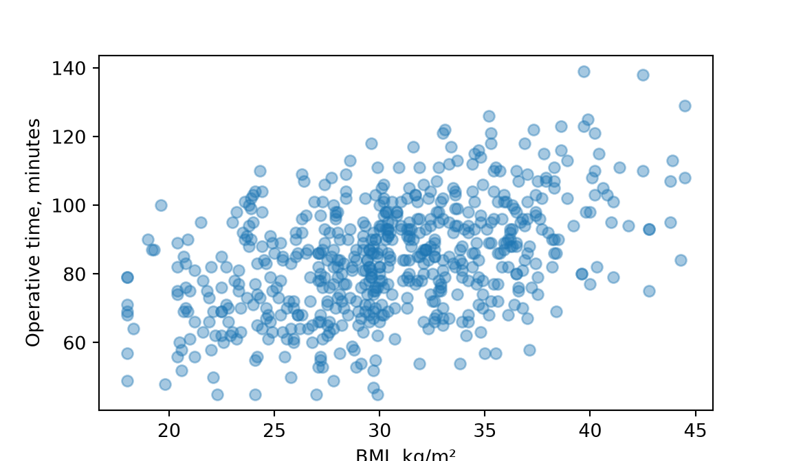

Pearson correlation, Spearman correlation and contingency coefficients: how strongly two things go together.
Two things measured on the same patients: BMI and operative time, PROM improvement and satisfaction, ASA class and hypertension. The tests on this page don’t compare groups. They put one number on how strongly the two go together, with a 95% CI. If you want to predict one from the other, use regression (page 11).
Note💡 How every section on this page works
Each section answers one question about the practice cohort. Its first code block loads the packages and the data, so you can jump straight to the section you need. Run that section’s blocks in order, top to bottom.
To keep the code short, the examples use every case, including the 80 patients who had both sides operated on. In a real study, decide how to handle them (page 3) and say what you did.
Pearson correlation
The question: How closely does operative time track BMI?
When to use it
Two measurements on the same patients, and you want one number for how closely they move together along a straight line.
Both are roughly normal, without extreme outliers, and the scatter plot looks like a cloud stretched along a line.
If either is skewed or ordinal, has outliers, or the points follow a curve → Spearman correlation.
If you want to predict one from the other, or adjust for other variables → linear regression.
library(tidyverse)cohort <-read_csv("data/cohort.csv", show_col_types =FALSE)ggplot(cohort, aes(bmi, op_time_min)) +geom_point(alpha =0.4) +# see-through points show where they pile uplabs(x ="BMI, kg/m²", y ="Operative time, minutes")

import pandas as pdimport matplotlib.pyplot as pltfrom scipy import statscohort = pd.read_csv("data/cohort.csv")fig, ax = plt.subplots(figsize=(6, 3.5))ax.scatter(cohort["bmi"], cohort["op_time_min"], alpha=0.4) # see-through points show where they pile upax.set_xlabel("BMI, kg/m²")ax.set_ylabel("Operative time, minutes")plt.show()

The points drift upward from left to right, along a rough line, with no extreme outliers.
cor (R) or statistic (Python): Pearson’s r = 0.45. It runs from −1 (a perfect falling line) through 0 (no straight-line relationship) to +1 (a perfect rising line).
t = 12.4, df = 598: the test statistic, with 600 procedures minus two degrees of freedom. Python doesn’t print it.
p < 0.001 (R prints < 2.2e-16): a correlation this strong would be very unlikely if BMI and operative time were unrelated.
95% CI 0.39 to 0.51.
Effect size and 95% CI
r is the effect size: r = 0.45 (95% CI 0.39 to 0.51). As a rough guide, 0.1 is small, 0.3 medium and 0.5 large. Squaring it gives the share of the variation in operative time that goes with BMI: r² = 0.20, about a fifth.
How to report it
Methods: The association between BMI and operative time was measured with Pearson’s correlation coefficient (r).
Results: The correlation between BMI and operative time was r = 0.45 (Pearson; 95% CI 0.39 to 0.51; p < 0.001; n = 600 procedures).
Warning⚠️ Watch out: r only sees straight lines, and isn’t cause
A relationship that rises and then falls can have r close to 0, and one outlier can create or hide a correlation, so always look at the scatter plot first. And a correlation doesn’t say which causes which, or whether something else (procedure type, surgeon) drives both. To adjust for other variables, use multiple regression.
Spearman correlation
The question: Are patients whose HOOS JR or KOOS JR improved more from before surgery to 1 year also more satisfied?
When to use it
Two variables on the same patients, at least one of them ordinal (satisfaction from 1 to 5), skewed, or with outliers.
The relationship goes one way (always up, or always down) but needn’t be a straight line. Spearman’s ρ (rho) is Pearson’s r calculated on the ranks.
If both are roughly normal and the relationship is a straight line → Pearson correlation.
404 procedures have both a pre-op and a 1-year score and a satisfaction answer. The median improvement climbs with each satisfaction level, from 25.4 points among the 14 very dissatisfied to 43.8 among the 198 very satisfied. Satisfaction has only five values, so there are many ties.
Spearman's rank correlation rho
data: change$improvement and change$satisfaction_1yr
S = 6764534, p-value = 1.111e-15
alternative hypothesis: true rho is not equal to 0
sample estimates:
rho
0.3844721
rho (R) or statistic (Python): ρ = 0.38. Like r, it runs from −1 to +1; here it says patients with larger improvements tend to give higher satisfaction scores.
S = 6764534 (R only): the test statistic, built from the differences between the two rankings. You don’t need to report it.
p < 0.001 (R prints 1.111e-15): a correlation this strong would be very unlikely if improvement and satisfaction were unrelated.
Effect size and 95% CI
ρ is the effect size. Neither cor.test() nor scipy gives its 95% CI, so R uses DescTools and Python uses the formula behind it (Fisher’s z transformation).
ρ = 0.38 (95% CI 0.30 to 0.46): a moderate association, using the same rough guide as for r.
How to report it
Methods: The association between improvement in HOOS JR or KOOS JR from before surgery to 1 year and satisfaction at 1 year was measured with Spearman’s rank correlation coefficient (ρ).
Results: Among 404 procedures with both scores and a satisfaction answer, the correlation between the change in HOOS JR or KOOS JR and satisfaction was ρ = 0.38 (Spearman; 95% CI 0.30 to 0.46; p < 0.001).
Warning⚠️ Watch out: two instruments in one number
Hip patients answer HOOS JR and knee patients KOOS JR. Both run from 0 to 100, but a point on one isn’t guaranteed to mean the same as a point on the other. Pooling them is fine for a first look; in a paper, analyze hips and knees separately or say why you pooled them.
Tip🔀 R vs Python: ties and the CI
With fewer than 1290 patients, R’s cor.test() tries an exact p-value. With ties it can’t compute one, so it warns and falls back to the usual approximation, the one scipy always uses. exact = FALSE asks for the approximation directly, without the warning.
Neither gives a CI for ρ. DescTools’ SpearmanRho() and the Python formula use the same method: Fisher’s z with a standard error of 1/√(n − 3).
Contingency coefficients
The question: How strongly is ASA class linked with hypertension?
When to use it
Two categorical variables on the same patients. The chi-square test (page 8) asks whether they’re linked at all; a contingency coefficient says how strongly.
Phi (φ) is for 2 × 2 tables. Cramér’s V works for any table size and equals φ (without its sign) on a 2 × 2 table. Both run from 0 (no link) to 1 (each category of one predicts the other exactly).
Pearson’s contingency coefficient (C) is older. Its maximum is below 1 and depends on the table’s size (0.71 for a table with two columns), which makes it hard to read, so prefer V.
The chi-square p-value needs every expected count to be at least 5.
effectsize::cramers_v(asa_hypertension, adjust =FALSE) # see the R vs Python box
Cramer's V | 95% CI
-------------------------
0.20 | [0.12, 1.00]
- One-sided CIs: upper bound fixed at [1.00].
effectsize::pearsons_c(asa_hypertension)
Pearson's C | 95% CI
--------------------------
0.19 | [0.12, 1.00]
- One-sided CIs: upper bound fixed at [1.00].
print(stats.contingency.association(asa_hypertension, method="cramer")) # Cramér's V
0.19655916548428345
print(stats.contingency.association(asa_hypertension, method="pearson")) # Pearson's C
0.19286868402903107
Cramér’s V = 0.20, a small-to-medium association (as a rough guide for tables with two rows or columns, 0.1 is small, 0.3 medium and 0.5 large). R also prints a one-sided 95% CI (0.12 to 1.00): V can’t be negative, so only its lower bound is informative. scipy doesn’t compute this CI. Pearson’s C is 0.19 here, but its ceiling for this table is 0.71, not 1, so the same number means more than it seems: one more reason to report V.
How to report it
Methods: The association between ASA class and hypertension was tested with the chi-square test, with Cramér’s V as the effect size.
Results: Hypertension was present in 12 of 36 procedures (33.3%) in ASA 1 and 16 of 18 (88.9%) in ASA 4 (χ² = 23.2, df = 3, p < 0.001; Cramér’s V = 0.20, one-sided 95% CI 0.12 to 1.00).
Warning⚠️ Watch out: V gives the strength, not the pattern
Shuffling the rows of the table doesn’t change V, so V can’t say that hypertension rises steadily with ASA class. The row percentages show the pattern; put them in your Results. If the categories are ordered and you expect a trend, a test for trend can be more powerful than the plain chi-square test.
Tip🔀 R vs Python: Cramér’s V has two versions
effectsize’s cramers_v() and phi() apply a small-sample bias correction by default (here V = 0.18), while scipy’s association() doesn’t. adjust = FALSE turns it off so the two match; whichever you use, say which in your Methods. On a 2 × 2 table, association(method="cramer") gives φ without its sign.
Exercises
The solutions use the packages and data loaded in the sections above, so run the page from the top first.
1. How strongly is operative time linked with age? Report Pearson’s r with its 95% CI.
Spearman's rank correlation rho
data: cohort$los_days and cohort$age
S = 30777868, p-value = 0.0003644
alternative hypothesis: true rho is not equal to 0
sample estimates:
rho
0.1450568
print(stats.contingency.association(apnea, method="cramer")) # phi without its sign, on a 2 × 2 table
0.18175615899511754
Results: Sleep apnea was present in 69 of 257 men (26.8%) and 43 of 343 women (12.5%) (χ² = 19.8, df = 1, p < 0.001; φ = 0.18, one-sided 95% CI 0.11 to 1.00).